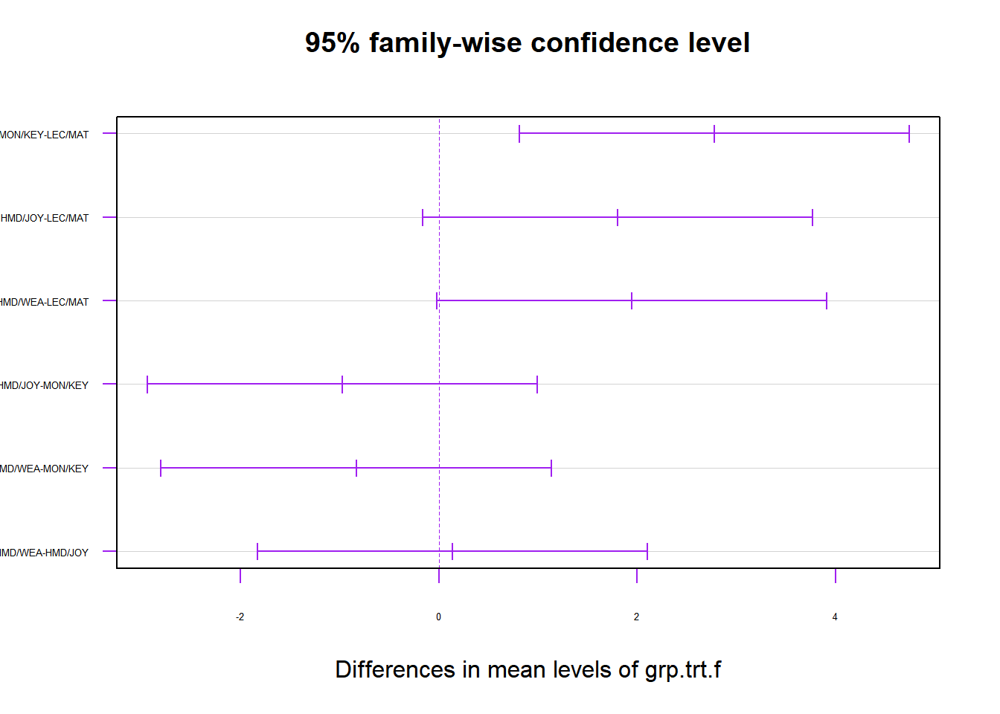

Chapter 4 Analysis of Treatment Means
In this chapter, we will consider estimation and inference concerning treatment/group means. We will first consider estimating individual treatment means. Then, we will consider Contrasts among treatment means. Finally, we consider all pairwise comparisons.
4.1 Individual Treatment Means
For the cell means model, we may be interested in making inference regarding the individual treatment.group means. The model is of the following form. Note that this is a shortened version of material covered in Chapter 1.
\[ Y_{ij}=\mu_i + \epsilon_{ij} \qquad i=1,\ldots,r; \quad j=1,\ldots, n_i \qquad \epsilon_{ij} \sim NID\left(0,\sigma^2\right) \]
The least squares estimator for \(\mu_i\) is \(\hat{\mu}_i=\overline{Y}_{i\bullet}\).
\[ \hat{\mu}_i = \overline{Y}_{i\bullet} = \frac{1}{n_i}\sum_{j=1}^{n_i} Y_{ij} \qquad E\left\{\overline{Y}_{i\bullet}\right\}=\frac{1}{n_i}n_i\mu_i = \mu_i \qquad V\left\{\overline{Y}_{i\bullet}\right\}=\frac{1}{n_i^2}n_i\sigma^2= \frac{\sigma^2}{n_i} \] For this model, the treatment means are independent and we have the following distributional properties.
\[ \overline{Y}_{i\bullet} \sim N\left(\mu_i,\frac{\sigma^2}{n_i}\right) \qquad \qquad \frac{SSE}{\sigma^2}=\frac{\left(n_T-r\right)MSE}{\sigma^2} \sim \chi_{n_T-r}^2 \]
Further, \(\overline{Y}_{i\bullet}\) and \(MSE\) are independent.
Consider two independent random variables, \(Z \sim N(0,1)\) and \(W\sim \chi_{\nu}^2\). The ratio \(T=Z/\sqrt{W/\nu}\) is distributed as Student’s t with \(\nu\) degrees of freedom. In this application, we have the following results. \[ Z=\frac{\overline{Y}_{i\bullet}-\mu_i}{\sqrt{\sigma^2/n_i}} \sim N(0,1) \qquad \qquad W=\frac{\left(n_T-r\right)MSE}{\sigma^2} \sim \chi_{n_T-r}^2 \] \[ T=\frac{Z}{\sqrt{W/\nu}}= \frac{\frac{\overline{Y}_{i\bullet}-\mu_i}{\sqrt{\sigma^2/n_i}}}{ \sqrt{\frac{\left(n_T-r\right)MSE}{\sigma^2}/\left(n_T-r\right)} }=\frac{\overline{Y}_{i\bullet}-\mu_i}{\sqrt{MSE/n_i}} \sim t_{n_T-r} \] Since \(\sigma^2\) is unknown in practice and must be estimated with \(s^2=MSE\), we obtain this result, where \(t_{n-r}\) represents Student’s \(t\)-distribution with \(n_T-r\) degrees of freedom.
\[ \hat{V}\left\{\overline{Y}_{i\bullet}\right\}=\frac{MSE}{n_i} \qquad \hat{SE}\left\{\overline{Y}_{i\bullet}\right\}=\sqrt{\frac{MSE}{n_i}} \qquad \frac{\overline{Y}_{i\bullet}-\mu_i}{\hat{SE}\left\{\overline{Y}_{i\bullet}\right\}} \sim t_{n_T-r} \]
This leads to a \((1-\alpha)100\%\) Confidence Interval for \(\mu_i\) of this form.
\[\overline{Y}_{i\bullet} \pm t_{1-\alpha/2;n_T-r}\hat{SE}\left\{\overline{Y}_{i\bullet}\right\} \quad \equiv \quad \overline{Y}_{i\bullet} \pm t_{1-\alpha/2;n_T-r}\sqrt{\frac{MSE}{n_i}} \]
In the rare situation that we wish to test \(H_0:\mu_i=c\) for some pre-specified constant \(c\), we can compute the \(t\)-statistic as follows.
\[ \mbox{Test Statistic:} \quad t_i^* = \frac{\overline{Y}_{i\bullet}-c}{\hat{SE}\left\{\overline{Y}_{i\bullet}\right\}} \qquad \mbox{Rejection Region:} \quad \left|t_i^*\right| \ge t_{1-\alpha/2;n_T-r} \]
4.2 Comparing Two Treatment Means
In some cases, researchers may wish to compare two specific treatment means. In this case, suppose the goal is to compare treatments \(i\) and \(i'\). The parameter of interest is \(D=\mu_i-\mu_{i'}\) and the estimator is \(\hat{D}=\overline{Y}_{i\bullet}-\overline{Y}_{i'\bullet}\). The mean and variance of \(\hat{D}\) are given below.
\[ E\left\{\hat{D}\right\}=E\left\{\overline{Y}_{i\bullet}-\overline{Y}_{i'\bullet}\right\}=\mu_i-\mu_{i'}=D \] \[ V\left\{\hat{D}\right\}= V\left\{\overline{Y}_{i\bullet}\right\} + V\left\{\overline{Y}_{i'\bullet}\right\} =\sigma^2\left(\frac{1}{n_i}+\frac{1}{n_{i'}}\right) \] As \(\sigma^2\) is not known in practice, the estimated variance of \(\hat{D}\) replaces \(\sigma^2\) with \(MSE\).
\[ \hat{V}\left\{\hat{D}\right\}= \hat{V}\left\{\overline{Y}_{i\bullet}\right\} + \hat{V}\left\{\overline{Y}_{i'\bullet}\right\} =MSE\left(\frac{1}{n_i}+\frac{1}{n_{i'}}\right) \]
A \((1-\alpha)100\%\) Confidence Interval for \(D=\mu_i-\mu_{i'}\) is obtained as follows, as well as a test of \(H_0:D=0\) versus \(H_A:D\ne 0\).
\[ \mbox{Confidence Interval:} \quad \hat{D} \pm t_{1-\alpha/2;n_T-r}\hat{SE}\left\{\hat{D}\right\} \equiv \hat{D} \pm t_{1-\alpha/2;n_T-r} \sqrt{MSE\left(\frac{1}{n_i}+\frac{1}{n_{i'}}\right)} \]
\[ \mbox{Test Statistic:} \quad t^*=\frac{\hat{D}}{\hat{SE}\left\{\hat{D}\right\}} \qquad \mbox{Rejection Region:} \quad \left|t^*\right| \ge t_{1-\alpha/2;n_T-r} \]
The only difference between this and the 2-sample \(t\)-test is that all \(r\) treatments/groups are used to estimate \(\sigma^2\), and increasing the degrees of freedom to \(n_T-r\). We will consider adjustments for comparing all pairs of treatments later in the chapter.
4.3 Contrasts Among Treatment Means
A Contrast is any linear function of treatment means such that the coefficients sum to 0. Thus, for instance \(D=\mu_i-\mu_{i'}\) is a contrast among treatment means that only involves the difference between treatments \(i\) and \(i'\). In general, we define contrasts as follows.
\[ L = \sum_{i=1}^rc_i\mu_i \qquad \mbox{such that: } \sum_{i=1}^rc_i=0 \]
The estimator for \(L\) is \(\hat{L}\) that replaces the \(\left\{\mu_i\right\}\) with the treatment means \(\left\{\overline{Y}_{i\bullet}\right\}\).
\[ \hat{L}=\sum_{i=1}^rc_i\overline{Y}_{i\bullet} \qquad E\left\{\hat{L}\right\}=\sum_{i=1}^rc_i\mu_i=L \]
\[ V\left\{\hat{L}\right\}=\sum_{i=1}^r c_i^2\frac{\sigma^2}{n_i} \qquad \qquad \hat{V}\left\{\hat{L}\right\}=MSE\sum_{i=1}^r\frac{c_i^2}{n_i} \] We can make use of the \(t\)-distribution to obtain confidence intervals and tests regarding contrasts. Also, we can use an \(F\)-test as well.
\[ \frac{\hat{L}-L}{\hat{SE}\left\{\hat{L}\right\}} \sim t_{n_T-r} \quad \Rightarrow \quad (1-\alpha)100\% \mbox{ CI for L:} \quad \hat{L} \pm t_{1-\alpha/2;n_T-r}\hat{SE}\left\{\hat{L}\right\} \]
For testing \(H_0:L=0\) versus \(H_A:L\ne 0\), we can use either a \(t\)-test or \(F\)-test, which provide the same conclusions and \(P\)-values. The \(t\)-test is given here.
\[ \mbox{Test Statistic:} \quad t^*=\frac{\hat{L}}{\hat{SE}\left\{\hat{L}\right\}} \qquad \mbox{Rejection Region:}\quad \left|t^*\right| \ge t_{1-\alpha/2;n_T-r} \]
For the \(F\)-test, we first define the sum of squares for the contrast, then construct the \(F\)-statistic.
\[ \mbox{Contrast Sum of Squares:} \quad SSL = \frac{\left(\hat{L}\right)^2}{\sum_{i=1}^r\frac{c_i^2}{n_i}} \] \[n_1=\cdots =n_r=n \quad \Rightarrow \quad SSL=n\frac{\left(\hat{L}\right)^2}{\sum_{i=1}^rc_i^2} \]
\[ \mbox{Test Statistic:} \quad F^*=\frac{SSL}{MSE} \qquad \mbox{Rejection Region:} \quad F^* \ge F_{1-\alpha;1,n_T-r} \]
Two contrasts \(L_1=\sum_{i=1}^ra_i\mu_i\) and \(L_2=\sum_{i=1}^rb_i\mu_i\) where \(\sum_{i=1}^ra_i=\sum_{i=1}^rb_i=0\) are said to be Orthogonal Contrasts if the product of their coefficients divided by their sample sizes is 0.
\[ L_1,L_2\mbox{ are orthogonal if:} \quad \sum_{i=1}^r\frac{a_ib_i}{n_i}=0 \]
When the experiment is balanced, this simplifies to \(\sum_{i=1}^ra_ib_i=0\). Among \(r\) treatments/groups, we can construct \(r-1\) pairwise orthogonal contrasts, whose sums of squares and degrees of freedom sum to \(SSTR\) and \(df_{TR}\), respectively.
Example 4.1 - Virtual Training for a Lifeboat Launching Task
Here, we re-describe the virtual training study to set up some interesting contrasts among the training methods. A study in South Korea compared \(r=4\) methods of training to conduct a lifeboat launching task (Jung and Ahn 2018). The treatments and their labels from the paper are given below and the response \(Y\) was a procedural knowledge score for subjects post training.
- Lecture/Materials - Traditional Lecture with no computer component (LEC/MAT)
- Monitor/Keyboard - Trained virtually with a monitor, keyboard, and mouse (MON/KEY)
- Head-Mounted Display/Joypad - Trained virtually with HMD and joypad (HMD/JOY)
- Head-Mounted Display/Wearable Sensors - (HMD/WEA)
There were a total of \(n_T=64\) subjects and they were randomized so that 16 subjects received each treatment \(\left(n_1=n_2=n_3=n_4=16\right)\).
Consider the following 3 contrasts.
- Lecture Materials versus Virtual Training \(a_1=3,a_2=a_3=a_4=-1\)
- Monitor/Keyboard versus Head Mounted Display \(b_1=0,b_2=2,b_3=b_4=-1\)
- Head Mounted Displays: Joypad versus Wearables \(d_1=d_2=0,d_3=1,d_4=-1\)
All of these are contrasts, as their coefficients sum to zero. Further, they are pairwise orthogonal.
\[ \sum_{i=1}^ra_ib_i=3(0)+(-1)(2)+(-1)(-1)+(-1)(-1)=0-2+1+1=0 \]
\[ \sum_{i=1}^ra_id_i=3(0)+2(0)+(-1)(1)+(-1)(-1)=0+0-1+1=0 \]
\[ \sum_{i=1}^rb_id_i=0(0)+2(0)+(-1)(1)+(-1)(-1)=0+0-1+1=0 \] Table 4.1 gives calculations necessary to obtain the Confidence Intervals, \(t\)-tests, sums of squares and \(F\)-tests for the three contrasts. Recall from the last chapter, the following quantities.
\[ SSTR=65.628 \quad df_{TR}=3 \qquad SSE=265.815 \quad df_E=60 \quad MSE=4.430 \] The critical \(t\)-value for \(\alpha=.05\) and \(df_E=60\) is \(t_{.975,60}=2.000\).
For contrast \(L_1\), comparing the virtual training methods to the “control” treatment has the following values.
\[ \hat{L}_1=3\overline{Y}_{1\bullet}-\overline{Y}_{2\bullet} -\overline{Y}_{3\bullet}-\overline{Y}_{4\bullet}=-6.526 \] \[ \hat{SE}\left\{\hat{L}_1\right\}=\sqrt{MSE\sum_{i=1}^4\frac{a_i^2}{n_i}}= \sqrt{4.430(0.75)}=1.823 \] \[ 95\% \mbox{ CI for } L_1: \quad -6.526 \pm 2.000(1.823) \equiv -6.526 \pm 3.646 \equiv (-10.172,-2.880) \] \[ \mbox{Test Statistic:} \quad t_1^* = \frac{-6.526}{1.823}=-3.580 \] \[ \mbox{Rejection Region:}\quad \left|t_1^*\right|\ge 2.000 \qquad P=2P\left(t_{60}\ge |-3.580|\right)=.0007 \]
\[ SSL_1 = \frac{\left(\hat{L}_1\right)^2}{\sum_{i=1}^r\frac{a_i^2}{n_i}}= \frac{(-6.526)^2}{0.75}=56.785 \]
\[ \mbox{Test Statistic:} \quad F_1^* = \frac{SSL_1}{MSE}=\frac{56.785}{4.430}=12.818 \]
\[ \mbox{Rejection Region:}\quad F_1^*\ge F_{.95,1,60}=4.001 \qquad P=P\left(F_{1,60}\ge 12.818\right)=.0007 \]
Without going through the calculations, we obtain the following values for \(L_2\) and \(L_3\).
\[ L_2: \quad \hat{L}_2=-1.805 \quad \hat{SE}\left\{\hat{L}_2\right\}=1.289 \quad SSL_2=8.688 \] \[ L_3: \quad \hat{L}_3=-0.139 \quad \hat{SE}\left\{\hat{L}_3\right\}=0.744 \quad SSL_3=0.155 \] The sums of squares for the three pairwise orthogonal contrasts sum up to the treatment sum of squares.
\[ SSL_1+SSL_2+SSL_3=56.785+8.688+0.155=65.628=SSTR \] The main take away is that the three virtual training methods (as a group) have significantly higher scores than the Lecture/Material control group. There appears to be no significant differences among the virtual training methods.
| n | Mean | a | b | d | L1 | L2 | L3 | \(a^2/n\) | \(b^2/n\) | \(d^2/n\) | |
|---|---|---|---|---|---|---|---|---|---|---|---|
| LEC/MAT (i=1) | 16 | 4.931 | 3 | 0 | 0 | 14.793 | 0 | 0 | 0.5625 | 0 | 0 |
| MON/KEY (i=2) | 16 | 7.708 | -1 | 2 | 0 | -7.708 | 15.416 | 0 | 0.0625 | 0.25 | 0 |
| HMD/JOY (i=3) | 16 | 6.736 | -1 | -1 | 1 | -6.736 | -6.736 | 6.736 | 0.0625 | 0.0625 | 0.0625 |
| HMD/WEA (i=4) | 16 | 6.875 | -1 | -1 | -1 | -6.875 | -6.875 | 6.875 | 0.0625 | 0.0625 | 0.0625 |
| Sum | 64 | 0 | 0 | 0 | -6.526 | 1.805 | -0.139 | 0.75 | 0.375 | 0.125 |
While it is possible to construct contrasts directly in R, it is very easy to compute them directly, as we show below.
## grp.trt procKnow
## 1 1 4.5614
## 2 1 6.6593attach(vt)
vt.n <- as.vector(tapply(procKnow, grp.trt, length)) ## Obtain n_i
vt.mean <- as.vector(tapply(procKnow, grp.trt, mean)) ## Obtain ybar_i
vt.var <- as.vector(tapply(procKnow, grp.trt, var)) ## Obtain s_i^2
cbind(vt.n, vt.mean, vt.var)## vt.n vt.mean vt.var
## [1,] 16 4.930550 3.763633
## [2,] 16 7.708337 2.044874
## [3,] 16 6.736106 7.952409
## [4,] 16 6.874994 3.960078n_T <- sum(vt.n)
r <- length(vt.n)
ybar. <- sum(vt.n*vt.mean)/n_T
SSTR <- sum(vt.n*(vt.mean-ybar.)^2)
SSE <- sum((vt.n-1)*vt.var)
MSE <- SSE/(n_T-r)
L1.a <- c(3,-1,-1,-1)
L2.b <- c(0,2,-1,-1)
L3.c <- c(0,0,1,-1)
L1.hat <- sum(L1.a*vt.mean)
L2.hat <- sum(L2.b*vt.mean)
L3.hat <- sum(L3.c*vt.mean)
SE.L1.hat <- sqrt(MSE*sum(L1.a^2/vt.n))
SE.L2.hat <- sqrt(MSE*sum(L2.b^2/vt.n))
SE.L3.hat <- sqrt(MSE*sum(L3.c^2/vt.n))
SSL.1 <- L1.hat^2/sum(L1.a^2/vt.n)
SSL.2 <- L2.hat^2/sum(L2.b^2/vt.n)
SSL.3 <- L3.hat^2/sum(L3.c^2/vt.n)
L1.out <- cbind(L1.hat, SE.L1.hat, L1.hat/SE.L1.hat,
L1.hat-qt(.975,n_T-r)*SE.L1.hat,
L1.hat+qt(.975,n_T-r)*SE.L1.hat,
SSL.1, SSL.1/MSE, 1-pf(SSL.1/MSE,1,n_T-r))
L2.out <- cbind(L2.hat, SE.L2.hat, L2.hat/SE.L2.hat,
L2.hat-qt(.975,n_T-r)*SE.L2.hat,
L2.hat+qt(.975,n_T-r)*SE.L2.hat,
SSL.2, SSL.2/MSE, 1-pf(SSL.2/MSE,1,n_T-r))
L3.out <- cbind(L3.hat, SE.L3.hat, L3.hat/SE.L3.hat,
L3.hat-qt(.975,n_T-r)*SE.L3.hat,
L3.hat+qt(.975,n_T-r)*SE.L3.hat,
SSL.3, SSL.3/MSE, 1-pf(SSL.3/MSE,1,n_T-r))
L.out <- rbind(L1.out, L2.out, L3.out)
colnames(L.out) <- c("Lhat", "Std Err", "t*", "LB", "UB", "SS", "F*", "P(>F*)")
rownames(L.out) <- c("L1:(3,-1,-1,-1)","L2:(0,2,-1,-1)","L3:(0,0,1,-1)")
round(L.out,3)## Lhat Std Err t* LB UB SS F* P(>F*)
## L1:(3,-1,-1,-1) -6.528 1.823 -3.581 -10.174 -2.882 56.816 12.825 0.001
## L2:(0,2,-1,-1) 1.806 1.289 1.401 -0.773 4.384 8.694 1.962 0.166
## L3:(0,0,1,-1) -0.139 0.744 -0.187 -1.627 1.350 0.154 0.035 0.853\[\nabla\]
4.4 Simultaneous Comparisons
Often when fitting models, we wish to make multiple comparisons simultaneously. If we have \(k\) independent comparisons and we make each one with significance level of \(\alpha\), the chances that all conclusions are correct is \((1-\alpha)^k\) which is less than \(1-\alpha\).
Other issues arise when researchers wait until observing the data to choose which comparisons to make (like comparing the maximum and minimum observed means). This practice has the effect of inflating the Type I error rate, \(\alpha\), and is referred to as data snooping.
There are various methods for making simultaneous corrections. One common method is to do each comparison with \(\alpha^*=\alpha/k\), and then \(\left(1-\alpha^*\right)^k \ge (1-\alpha)\).
For instance, if we wish to compute \(k=5\) confidence intervals, and we want them all to contain their true parameter with \(95\%\) confidence, \(\alpha=0.05\) and \(\alpha^*=\alpha/k=0.01\), then we should construct 99% confidence intervals for the individual parameters. Note that \((1-.01)^5=.9510>.95\).
In this section, several procedures are described for making simultaneous comparisons.
4.4.1 Tukey’s Honest Significant Difference (HSD)
This method is widely used for ANOVA models. It makes use of the Studentized Range Distribution with critical values given in many textbooks, online, and on the course slides. In R, the qtukey function can be used to obtain critical values and the ptukey function can be used to obtain adjusted \(P\)-values.
The basis for the distribution is as follows, where \(Y_1,\ldots,Y_r\) are independent and normally distributed with mean \(\mu\) and variance \(\sigma^2\). Further, let \(s^2\) be an unbiased estimator of \(\sigma^2\) that is independent of \(Y_1,\ldots,Y_r\), with degrees of freedom \(\nu\). Note that \(s^2\) cannot be computed from \(Y_1,\ldots,Y_r\) in this situation, but it does work when we are comparing treatment/group means below. Let \(w\) be the range of \(Y_1,\ldots,Y_r\) and \(w/s\) be the studentized range, indexed by the sample size, \(r\) and the degrees of freedom for \(s\), \(\nu\). We will use \(q_{1-\alpha;r,\nu}\) represent the \(1-\alpha\) quantile of the Studentized Range distribution.
\[ w=\max\left(Y_1,\ldots,Y_r\right)-\min\left(Y_1,\ldots,Y_r\right) \qquad \frac{w}{s}=q(r,\nu) \]
\[ P\left(\frac{w}{s}=q(r,\nu)\le q_{1-\alpha;r,\nu}\right)=1-\alpha \] \[ \quad \Rightarrow \quad P\left(\frac{\left|Y_i-Y_{i'}\right|}{s} \le q_{1-\alpha;r,\nu}\right)=1-\alpha \quad \mbox{for all } i,i' \]
Now, consider making all pairwise comparisons among means under the assumption of equal means \(\left(\mu_1=\cdots = \mu_r = \mu\right)\) and equal sample sizes \(\left(n_1=\cdots = n_r=n\right)\).
Then, we have the following results for the sampling distribution of \(\overline{Y}_{i\bullet}\) and its estimated variance, which is unbiased with \(n_T-r\) degrees of freedom. Furthermore the sample means \(\left\{\overline{Y}_{i\bullet}\right\}\) and \(MSE\) are independent.
\[ \overline{Y}_{i\bullet} \sim N\left(\mu,\frac{\sigma^2}{n}\right) \qquad \qquad \hat{V}\left\{\overline{Y}_{i\bullet}\right\}=\frac{MSE}{n} \] \[ \quad \Rightarrow \quad P\left(\frac{\left|\overline{Y}_{i\bullet}- \overline{Y}_{i'\bullet}\right|}{\sqrt{MSE/n}} \le q_{1-\alpha;r,\nu}\right)=1-\alpha \quad \mbox{for all } i,i' \]
Then we conclude \(\mu_i \ne \mu_{i'}\) if the following criteria is met.
\[ \frac{\left|\overline{Y}_{i\bullet}- \overline{Y}_{i'\bullet}\right|}{\sqrt{MSE/n}} \ge q_{1-\alpha;r,\nu} \quad \Rightarrow \quad \left|\overline{Y}_{i\bullet}- \overline{Y}_{i'\bullet}\right| \ge q_{1-\alpha;r,\nu}\sqrt{\frac{MSE}{n}} \] Subsequently this method was generalized to allow for unequal sample sizes with the following decision rule. Conclude \(\mu_i \ne \mu_{i'}\) if the following result holds.
\[ \left|\overline{Y}_{i\bullet}- \overline{Y}_{i'\bullet}\right| \ge \frac{q_{1-\alpha;r,\nu}}{\sqrt{2}}\sqrt{MSE \left(\frac{1}{n_i}+\frac{1}{n_{i'}}\right)} \] An equivalent way of writing this test, in terms of \(D=\mu_i-\mu_{i'}\) and \(\hat{D}=\overline{Y}_{i\bullet}-\overline{Y}_{i'\bullet}\) is to reject \(H_0: D=0\) based on the following test.
\[ \mbox{Test Statistic:} \quad q^*=\frac{\sqrt{2}\hat{D}}{\hat{SE}\left\{\hat{D}\right\}} \qquad \mbox{Rejection Region:} \quad \left|q^*\right| \ge q_{1-\alpha;r,\nu} \] The adjusted \(P\)-value is the area above \(\left|q^*\right|\) in the Studentized Range distribution.
To obtain simultaneous \((1-\alpha)100\%\) Confidence Intervals for all \(r(r-1)/2\) mean differences we can simply invert the test as follows.
\[ (1-\alpha)100\% \mbox{ for } \mu_i-\mu_{i'}: \quad \left(\overline{Y}_{i\bullet}- \overline{Y}_{i'\bullet}\right) \pm \frac{1}{\sqrt{2}}q_{1-\alpha;r,n_T-r} \sqrt{MSE \left(\frac{1}{n_i}+\frac{1}{n_{i'}}\right)} \]
Example 4.2 - Virtual Training for a Lifeboat Launching Task
First, we obtain \(r=4\), \(\nu=64-4=60\), and \(q_{.95;4,60}=3.737\) for this study. Using calculations from before, we have the following results.
\[ n_1=n_2=n_3=n_4=16 \qquad \overline{y}_{1\bullet}=4.931 \quad \overline{y}_{2\bullet}=7.708 \quad \overline{y}_{3\bullet}=6.736 \quad \overline{y}_{4\bullet}=6.875 \]
\[ MSE = 4.430 \qquad \hat{SE}\left\{\hat{D}\right\}= \sqrt{4.430\left(\frac{1}{16}+\frac{1}{16}\right)}=0.744 \]
Next we compute the Tukey HSD for all pairs of means (as this is a balanced design).
\[ HSD_{ii'}=\frac{3.737}{\sqrt{2}}(0.744)=2.642(0.744)=1.966 \]
That is, any pairs of means that differ by more than 1.966 in absolute value will be declared significantly different. We also obtain simultaneous 95% Confidence Intervals by adding and subtracting 1.966 to each difference \(\hat{D}\). Here we compute the values for the comparison of treatments 1 (LEC/MAT) and 2 (MON/KEY). Then we will use the R function TukeyHSD after fitting the model with an aov object.
\[ \hat{D}_{21}=\overline{Y}_{2\bullet}-\overline{Y}_{1\bullet}= 7.708-4.931=2.777 \]
\[ 95\% \mbox{ Simultaneous CI for } \mu_2-\mu_1: \quad 2.777 \pm 1.966 \quad \equiv \quad (0.811,4.743) \]
Thus, we can conclude that the Monitor/Keyboard condition provides higher scores on average than the Lecture/Material condition. That is \(\mu_2>\mu_1\). We next obtain the adjusted \(P\)-value, making use of the ptukey function in R. First, though, we have to scale it back to a studentized range, \(q^*\).
\[ q^* = \frac{\sqrt{2}\hat{D}}{\hat{SE}\left\{\hat{D}\right\}}= \frac{\sqrt{2}(2.777)}{0.744}=5.279 \qquad P= P\left(q_{4,60}\ge |5.279|\right)=.0023 \]
Now, we use R to run all possible comparisons. Note that we have to fit an aov object and not a lm object to use the TukeyHSD function.
## grp.trt procKnow
## 1 1 4.5614
## 2 1 6.6593vt$grp.trt.f <- factor(vt$grp.trt, levels=1:4,
labels=c("LEC/MAT","MON/KEY","HMD/JOY", "HMD/WEA"))
vt.mod1 <- aov(procKnow ~ grp.trt.f, data=vt)
summary.lm(vt.mod1)##
## Call:
## aov(formula = procKnow ~ grp.trt.f, data = vt)
##
## Residuals:
## Min 1Q Median 3Q Max
## -5.0831 -1.4444 0.5774 1.5495 3.1900
##
## Coefficients:
## Estimate Std. Error t value Pr(>|t|)
## (Intercept) 4.9306 0.5262 9.370 2.37e-13 ***
## grp.trt.fMON/KEY 2.7778 0.7442 3.733 0.000423 ***
## grp.trt.fHMD/JOY 1.8056 0.7442 2.426 0.018277 *
## grp.trt.fHMD/WEA 1.9444 0.7442 2.613 0.011329 *
## ---
## Signif. codes: 0 '***' 0.001 '**' 0.01 '*' 0.05 '.' 0.1 ' ' 1
##
## Residual standard error: 2.105 on 60 degrees of freedom
## Multiple R-squared: 0.1981, Adjusted R-squared: 0.158
## F-statistic: 4.941 on 3 and 60 DF, p-value: 0.003931## Analysis of Variance Table
##
## Response: procKnow
## Df Sum Sq Mean Sq F value Pr(>F)
## grp.trt.f 3 65.664 21.8880 4.9406 0.003931 **
## Residuals 60 265.815 4.4302
## ---
## Signif. codes: 0 '***' 0.001 '**' 0.01 '*' 0.05 '.' 0.1 ' ' 1## Tukey multiple comparisons of means
## 95% family-wise confidence level
##
## Fit: aov(formula = procKnow ~ grp.trt.f, data = vt)
##
## $grp.trt.f
## diff lwr upr p adj
## MON/KEY-LEC/MAT 2.7777875 0.8113167 4.7442583 0.0023332
## HMD/JOY-LEC/MAT 1.8055562 -0.1609146 3.7720271 0.0829543
## HMD/WEA-LEC/MAT 1.9444437 -0.0220271 3.9109146 0.0537097
## HMD/JOY-MON/KEY -0.9722312 -2.9387021 0.9942396 0.5624876
## HMD/WEA-MON/KEY -0.8333437 -2.7998146 1.1331271 0.6788308
## HMD/WEA-HMD/JOY 0.1388875 -1.8275833 2.1053583 0.9976681
Note that only treatments 2 and 1 are significantly different. The Confidence Interval does not contain 0 and the adjusted \(P\)-value is below 0.05. Treatments 1 and 4 are close to being significantly different, but the Confidence Interval contains 0 and the \(P\)-value is above 0.05.
\[\nabla\]
4.4.2 Scheffe’s Method for Multiple Comparisons
This method is very conservative, but due to its procedure, it can be applied to all possible contrasts among treatment means. Using previous results on contrasts, we have the following set up for the procedure.
\[ L=\sum_{i=1}^rc_i \mu_i \qquad \mbox{ such that } \sum_{i=1}^rc_i=0 \]
\[ \hat{L}=\sum_{i=1}^rc_i\overline{Y}_{i\bullet} \qquad \hat{SE}\left\{\hat{L}\right\}=\sqrt{MSE\sum_{i=1}^r\frac{c_i^2}{n_i}} \]
Then we construct simultaneous intervals of the following form.
\[ (1-\alpha)100\% \mbox{ Simultaneous CI for }L: \quad \hat{L} \pm \left(\sqrt{(r-1)F_{1-\alpha;r-1,n_T-r}}\right) \hat{SE}\left\{\hat{L}\right\} \] The critical \(F\)-value is the same critical value for testing \(H_0:\mu_1=\cdots = \mu_r\) for the Analysis of Variance. Note that when this hypothesis is true, all contrasts are 0.
We can also simultaneously test whether a set of contrasts are 0.
\(H_0:L=\sum_{i=1}^r c_i\mu_i=0\) vs \(H_A:L=\sum_{i=1}^r c_i\mu_i \ne 0\)
\[ \mbox{Test Statistic:} \quad F^*=\frac{\left(\hat{L}\right)^2}{(r-1)\hat{V}\left\{\hat{L}\right\}} \qquad \mbox{Rejection Region:} \quad F^*\geq F_{1-\alpha;r-1,n_T-r} \]
Example 4.3 - Virtual Training for a Lifeboat Launching Task
Consider the three pairwise orthogonal contrasts that we previously estimated.
- \(L_1\): Lecture/Materials vs Virtual Training
- \(L_2\): Monitor/Keyboard versus Head Mounted Displays
- \(L_3\): HMD/Joypad versus HMD/Wearables
The critical \(F\)-value we need is \(F_{.95;3,60}=2.758\), leading to the following critical value for the Scheffe simultaneous confidence intervals.
\[ \sqrt{(r-1)F_{1-\alpha;r-1,n_T-r}}= \sqrt{(4-1)2.758}=2.876 \] Next, we give the estimated contrasts, their standard errors, and simultaneous 95% Confidence Intervals for the population based contrasts.
\[ \hat{L}_1=-6.526 \qquad \hat{SE}\left\{\hat{L}_1\right\}=1.823 \] \[ \hat{L}_2=1.805 \qquad \hat{SE}\left\{\hat{L}_2\right\}=1.289 \]
\[ \hat{L}_3=-0.139 \qquad \hat{SE}\left\{\hat{L}_3\right\}=0.744 \]
\[ 95\% \mbox{ CI for: }L_1=3\mu_1-\mu_2-\mu_3-\mu_4: \quad -6.526 \pm 2.876(1.823) \]
\[ \equiv -6.526\pm 5.243 \equiv (-11.769,-1.283) \]
\[ 95\% \mbox{ CI for: }L_2=2\mu_2-\mu_3-\mu_4: \quad 1.805 \pm 2.876(1.289) \]
\[ \equiv 1.805\pm 3.707 \equiv (-1.902,5.512) \]
\[ 95\% \mbox{ CI for: }L_3=\mu_3-\mu_4: \quad -0.139 \pm 2.876(0.744) \]
\[ \equiv -0.139\pm 2.140 \equiv (-2.779,2.001) \]
As a comparison between no adjustment for multiple Confidence Intervals and the Scheffe adjustment, consider the case of \(L_1\). When there was no adjustment, the interval was \((-10.172,-2.880)\). When the Scheffe adjustment was used, it was \((-11.769,-1.283)\). Again, Scheffe’s method can be used for all possible contrasts simultaneously.
\[\nabla\]
4.4.3 Bonferroni Method for Multiple Comparisons
The Bonferroni method is widely used in many situations where multiple tests are conducted (not just among treatment means). If we have \(g\) pre-planned comparisons or contrasts to be made, we make each comparison at the \(\alpha^*=\alpha/g\) significance level. Note that a special case of this is making \(g=r(r-1)/2\) comparisons among all pairs of treatment means. In that case, Tukey’s HSD will provide more powerful tests than the Bonferroni method (unless \(r\)=2, and there is only one comparison).
\[ L=\sum_{i=1}^rc_i \mu_i \qquad \mbox{ such that } \sum_{i=1}^rc_i=0 \]
\[ \hat{L}=\sum_{i=1}^rc_i\overline{Y}_{i\bullet} \qquad \hat{SE}\left\{\hat{L}\right\}=\sqrt{MSE\sum_{i=1}^r\frac{c_i^2}{n_i}} \]
Then we construct simultaneous confidence intervals of the following form.
\[ (1-\alpha)100\% \mbox{ Simultaneous CI for }L: \quad \hat{L} \pm t_{1-\alpha/(2g);n_T-r} \hat{SE}\left\{\hat{L}\right\} \]
Tables that give critical \(t\)-values for the Bonferroni method are available in textbooks, online, and on the course slides.
Simultaneous tests for \(g\) pre-planned contrasts can be conducted to test whether the contrast is equal to zero.
\[ H_0:L=\sum_{i=1}^rc_i\mu_i=0 \qquad H_A:L=\sum_{i=1}^rc_i\mu_i \ne 0 \] \[ \mbox{Test Statistic:} \quad t^*=\frac{\hat{L}}{\hat{SE}\left\{\hat{L}\right\}} \qquad \mbox{Rejection Region:} \quad \left|t^*\right| \ge t_{1-\alpha/(2g),n_T-r} \] \[ \mbox{Adjusted P-value:} \quad P=\min\left(1,g\times 2P\left(t_{n_T-r}\ge \left|t^*\right|\right)\right) \]
Example 4.4 - Virtual Training for a Lifeboat Launching Task
Consider the \(g=3\) pairwise orthogonal contrasts that we previously estimated.
- \(L_1\) Lecture/Materials vs Virtual Training
- \(L_2\) Monitor/Keyboard versus Head Mounted Displays
- \(L_3\) HMD/Joypad versus HMD/Wearables
The critical \(t\)-value we need is \(t_{1-.05/(2(3));60}=2.463\). We will conduct the three simultaneous \(t\)-tests and obtain their adjusted \(P\)-values.
Next, we give the estimated contrasts, their standard errors, and simultaneous \(t\)-tests with an overall experimentwise error rate of \(\alpha=0.05\) for the population based contrasts. Note that the individual tests are being conducted at \(\alpha^*=.05/3=.0167\) error rate.
\[ \hat{L}_1=-6.526 \qquad \hat{SE}\left\{\hat{L}_1\right\}=1.823 \qquad t_1^*=\frac{-6.526}{1.823}=-3.580 \] \[ \hat{L}_2=1.805 \qquad \hat{SE}\left\{\hat{L}_2\right\}=1.289 \qquad t_2^*=\frac{1.805}{1.289}=1.400 \]
\[ \hat{L}_3=-0.139 \qquad \hat{SE}\left\{\hat{L}_3\right\}=0.744 \qquad t_3^*=\frac{-0.139}{0.744}=-0.187 \] Thus, again, only the first contrast is significant. We compute the 3 adjusted \(P\)-values by first obtaining the 2-sided tail areas for the \(g=3\) \(t\)-statistics, then applying the Bonferroni adjustments.
\[ 2P\left(t_{60}\ge|3.580|\right) = 2(.00034)=.0007 \qquad P_1 = \min\left(1,3(.0007)\right) = .0021 \] \[ 2P\left(t_{60}\ge|1.400|\right) = 2(.0833)=.1666 \qquad P_2 = \min\left(1,3(.1666)\right) = .4998 \]
\[ 2P\left(t_{60}\ge|-0.187|\right) = 2(.4261)=.8522 \qquad P_3 = \min\left(1,3(.8522)\right) = 1 \]
Note that if we used the Bonferroni method for comparing all \(g=4(4-1)/2=6\) pairs of treatment means, the critical \(t\)-value would be \(t_{1-.05/(2(6));60}=2.729\). Since the standard error for the difference in two mean for this example is \(\hat{SE}\left\{\hat{D}\right\}=0.744\), the simultaneous confidence intervals would be of the following form.
\[ \hat{D}_{ii'} \pm 2.729(0.744) \quad \equiv \quad \hat{D}_{ii'} \pm 2.030 \]
These intervals are slightly wider than the Tukey based intervals \(\left(\hat{D}_{ii'} \pm 1.966\right)\). The same conclusions among treatment means are made.
\[\nabla\]
4.4.4 Multiple Range Methods
In this section, we briefly describe two methods that use multiple ranges for comparisons: Student-Newman-Keuls’ (often shortened to SNK) and Duncan’s methods. They both are based on ordering the observed means. Neither can be used to construct simultaneous confidence intervals.
\[ \overline{Y}_{(1)\bullet} \le \cdots \le \overline{Y}_{(r)\bullet} \qquad n_{(i)} \mbox{ is the sample size for the ordered groups} \]
Each method uses different critical values for testing pairs of treatment means, depending on how many means are between them. They both begin by comparing the extreme means, which encompass \(r\) means.
For the SNK method, we reject \(H_0:\mu_{(i)}-\mu_{(i')}=0\) where \(i>i'\) if the following result holds, where \(q_{1-\alpha;k,n_T-r}\) is obtained from the studentized range distribution.
\[ \overline{Y}_{(i)\bullet}- \overline{Y}_{(i')\bullet} \ge \frac{q_{1-\alpha;k,n_T-r}}{\sqrt{2}} \sqrt{MSE\left(\frac{1}{n_{(i)}}+\frac{1}{n_{(i')}}\right)} \qquad k=i-i'+1 \]
If we fail to reject this hypothesis, no means between these are compared.
For Duncan’s method, the error rates are increased as the means are farther apart in terms of the number of means between them. This makes it “easier” to detect differences at the cost of increasing overall error rates. In this case we reject \(H_0:\mu_{(i)}-\mu_{(i')}=0\) if the following result holds. As with the SNK method, if two means are not significantly different, no means between them are compared.
\[ \overline{Y}_{(i)\bullet}- \overline{Y}_{(i')\bullet} \ge \frac{q_{(1-\alpha)^{k-1};k,n_T-r}}{\sqrt{2}} \sqrt{MSE\left(\frac{1}{n_{(i)}}+\frac{1}{n_{(i')}}\right)} \qquad k=i-i'+1 \]
Example 4.5 - Virtual Training for a Lifeboat Launching Task
For this example, we have the following values.
\[ r=4 \qquad n_1=\cdots=n_r=16 \qquad MSE=4.430 \qquad \hat{SE}\left\{\hat{D}\right\}= \sqrt{4.430\left(\frac{1}{16}+\frac{1}{16}\right)}=0.744 \]
\[ \overline{Y}_{(1)\bullet}=4.931 \quad \overline{Y}_{(2)\bullet}=6.736 \quad \overline{Y}_{(3)\bullet}=6.875 \quad \overline{Y}_{(4)\bullet}=7.708 \] We first test \(H_0:\mu_{(4)}-\mu_{(1)}=0\) with range \(k=4-1+1=4\). Using the qtukey function in R, we obtain the following critical values and rejection regions (RR) based on the studentized range distribution with overall experimentwise error rate \(\alpha=.05\).
\[ \mbox{SNK:} \quad q(.95;4,60)=3.737 \qquad \mbox{RR:} \quad \overline{Y}_{(4)\bullet}- \overline{Y}_{(1)\bullet} \ge \frac{3.737}{\sqrt{2}}(0.744)=1.966 \]
\[ \mbox{Duncan:} \quad q((.95)^{4-1};4,60)=3.073 \qquad \mbox{RR:} \quad \overline{Y}_{(4)\bullet}- \overline{Y}_{(1)\bullet} \ge \frac{3.073}{\sqrt{2}}(0.744)=1.617 \] The observed difference is \(\overline{y}_{(4)\bullet}- \overline{y}_{(1)\bullet}=7.708-4.931=2.777\). Both methods conclude these means are significantly different.
Next, we obtain the critical values and rejection regions for testing \(H_0:\mu_{(4)}-\mu_{(2)}=0\) and \(H_0:\mu_{(3)}-\mu_{(1)}=0\), each with a range of \(k=3\).
\[ \mbox{SNK:} \quad q(.95;3,60)=3.399 \qquad \mbox{RR:} \quad \overline{Y}_{(i)\bullet}- \overline{Y}_{(i')\bullet} \ge \frac{3.399}{\sqrt{2}}(0.744)=1.788 \]
\[ \mbox{Duncan:} \quad q((.95)^{3-1};3,60)=2.976 \qquad \mbox{RR:} \quad \overline{Y}_{(i)\bullet}- \overline{Y}_{(i')\bullet} \ge \frac{2.976}{\sqrt{2}}(0.744)=1.566 \]
The observed differences are as follow.
\[ \overline{y}_{(4)\bullet}- \overline{y}_{(2)\bullet}=7.708-6.736=0.972 \qquad \overline{y}_{(3)\bullet}- \overline{y}_{(1)\bullet}=6.875-4.931=1.944 \]
Neither test rejects \(H_0:\mu_{(4)}-\mu_{(2)}=0\) and both reject \(H_0:\mu_{(3)}-\mu_{(1)}=0\). Thus, we do not compare \(\mu_{(4)}\) and \(\mu_{(3)}\), or compare \(\mu_{(3)}\) and \(\mu_{(2)}\), as both of these are between \(\mu_{(4)}\) and \(\mu_{(2)}\) . We will conduct the following test though, with \(k=2\), \(H_0:\mu_{(2)}-\mu_{(1)}=0\)
\[ \mbox{SNK:} \quad q(.95,2,60)=2.829 \qquad \mbox{RR:} \quad \overline{Y}_{(i)\bullet}- \overline{Y}_{(i')\bullet} \ge \frac{2.829}{\sqrt{2}}(0.744)=1.488 \]
\[ \mbox{Duncan:} \quad q((.95)^{2-1},2,60)=2.829 \qquad \mbox{RR:} \quad \overline{Y}_{(2)\bullet}- \overline{Y}_{(1)\bullet} \ge \frac{2.829}{\sqrt{2}}(0.744)=1.488 \]
The observed differences are as follow.
\[ \overline{y}_{(2)\bullet}- \overline{y}_{(1)\bullet}=6.736-4.931=1.805 \]
Thus, we reject \(H_0:\mu_{(2)}-\mu_{(1)}=0\).
Based on both the SNK and Duncan methods, we conclude that all three virtual reality methods perform better than the control (Lecture/Material) method. These methods are available in the agricolae package in R. Note that the treatment factor must be defined as a factor outside of aov or lm object to be used in the SNK.test and duncan.test functions.
## grp.trt procKnow
## 1 1 4.5614
## 2 1 6.6593##
## Call:
## lm(formula = procKnow ~ grp.trt.f, data = vt)
##
## Residuals:
## Min 1Q Median 3Q Max
## -5.0831 -1.4444 0.5774 1.5495 3.1900
##
## Coefficients:
## Estimate Std. Error t value Pr(>|t|)
## (Intercept) 4.9306 0.5262 9.370 2.37e-13 ***
## grp.trt.f2 2.7778 0.7442 3.733 0.000423 ***
## grp.trt.f3 1.8056 0.7442 2.426 0.018277 *
## grp.trt.f4 1.9444 0.7442 2.613 0.011329 *
## ---
## Signif. codes: 0 '***' 0.001 '**' 0.01 '*' 0.05 '.' 0.1 ' ' 1
##
## Residual standard error: 2.105 on 60 degrees of freedom
## Multiple R-squared: 0.1981, Adjusted R-squared: 0.158
## F-statistic: 4.941 on 3 and 60 DF, p-value: 0.003931## Analysis of Variance Table
##
## Response: procKnow
## Df Sum Sq Mean Sq F value Pr(>F)
## grp.trt.f 3 65.664 21.8880 4.9406 0.003931 **
## Residuals 60 265.815 4.4302
## ---
## Signif. codes: 0 '***' 0.001 '**' 0.01 '*' 0.05 '.' 0.1 ' ' 1##
## Study: vt.mod1 ~ "grp.trt.f"
##
## Student Newman Keuls Test
## for procKnow
##
## Mean Square Error: 4.430248
##
## grp.trt.f, means
##
## procKnow std r se Min Max Q25 Q50 Q75
## 1 4.930550 1.940008 16 0.5262039 0.3268 6.7509 4.230175 5.67085 6.375725
## 2 7.708337 1.429991 16 0.5262039 5.0733 9.7848 6.682275 8.33320 8.707800
## 3 6.736106 2.820002 16 0.5262039 1.6530 9.9261 5.298875 7.04235 9.101975
## 4 6.874994 1.989995 16 0.5262039 3.2286 9.8754 5.344875 6.84850 8.346350
##
## Alpha: 0.05 ; DF Error: 60
##
## Critical Range
## 2 3 4
## 1.488551 1.788389 1.966471
##
## Means with the same letter are not significantly different.
##
## procKnow groups
## 2 7.708337 a
## 4 6.874994 a
## 3 6.736106 a
## 1 4.930550 b##
## Study: vt.mod1 ~ "grp.trt.f"
##
## Duncan's new multiple range test
## for procKnow
##
## Mean Square Error: 4.430248
##
## grp.trt.f, means
##
## procKnow std r se Min Max Q25 Q50 Q75
## 1 4.930550 1.940008 16 0.5262039 0.3268 6.7509 4.230175 5.67085 6.375725
## 2 7.708337 1.429991 16 0.5262039 5.0733 9.7848 6.682275 8.33320 8.707800
## 3 6.736106 2.820002 16 0.5262039 1.6530 9.9261 5.298875 7.04235 9.101975
## 4 6.874994 1.989995 16 0.5262039 3.2286 9.8754 5.344875 6.84850 8.346350
##
## Alpha: 0.05 ; DF Error: 60
##
## Critical Range
## 2 3 4
## 1.488551 1.565916 1.616955
##
## Means with the same letter are not significantly different.
##
## procKnow groups
## 2 7.708337 a
## 4 6.874994 a
## 3 6.736106 a
## 1 4.930550 b\[\nabla\]
## Loading required package: carData##
## Attaching package: 'car'## The following object is masked from 'package:dplyr':
##
## recode## The following object is masked from 'package:purrr':
##
## some## Warning: package 'PMCMRplus' was built under R version 4.5.3